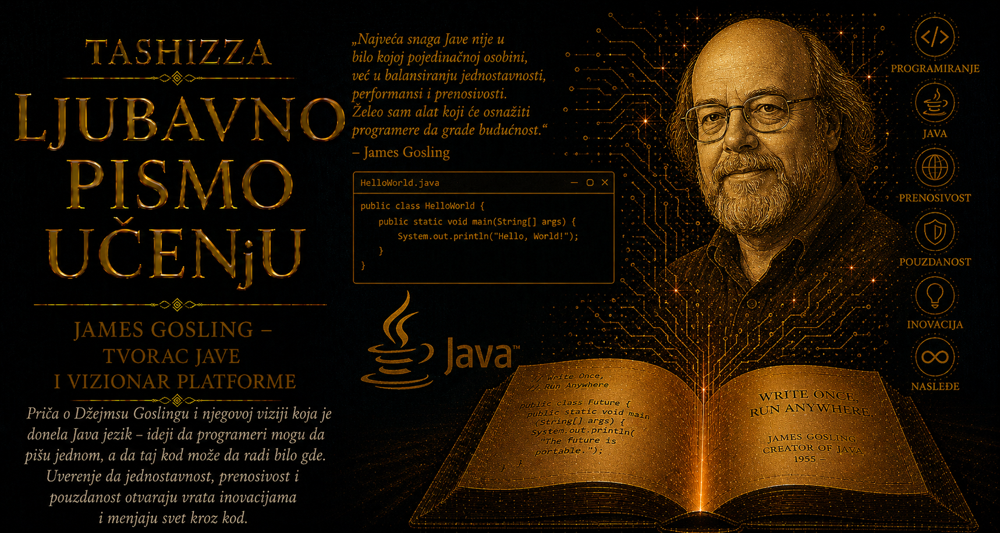

Ljubavno pismo učenju

Početkom devedesetih godina računarski svet već je raspolagao moćnim programskim jezicima, sve bržim procesorima i rastućim brojem operativnih sistema, ali je softver i dalje bio snažno vezan za mašinu na kojoj je nastao. Program napisan za jednu vrstu procesora često je zahtevao prilagođavanje, ponovno prevođenje i opsežno ispitivanje pre nego što bi mogao pouzdano da radi u drugačijem okruženju. Razlike u načinu predstavljanja podataka, upravljanju memorijom, sistemskim bibliotekama i grafičkim interfejsima pretvarale su prenosivost u skup, spor i neizvestan posao. Svaka nova platforma donosila je sopstvena pravila, pa su razvojni timovi održavali više verzija istog proizvoda i trošili dragoceno vreme na razlike među računarima umesto na problem koji je program trebalo da reši. Što je digitalni svet postajao raznovrsniji, to je cena njegove razjedinjenosti postajala veća.
Taj problem dobio je novu težinu kada su mikročipovi počeli da napuštaju radne stanice i ulaze u televizore, telefone, kućne aparate, komunikacione uređaje, automobile i industrijske sisteme. Takvi proizvodi koristili su procesore različitih proizvođača, raspolagali ograničenom memorijom i često ostajali u upotrebi znatno duže od prosečnog ličnog računara. Njihov softver morao je da bude pouzdan, dovoljno mali i sposoban da preživi promene hardvera bez neprekidnog prepravljanja. U kompaniji Sun Microsystems zato je 1990. godine pokrenut istraživačko-razvojni poduhvat poznat kao Green Project. James Gosling, Patrick Naughton i Mike Sheridan pokušavali su da osmisle tehnološki temelj za budući svet inteligentnih uređaja, u kojem bi isti programski sistem mogao da živi na čitavoj porodici različitih mašina.
Gosling je u početku razmatrao prilagođavanje jezika C++, jednog od najvažnijih alata za razvoj složenih sistema toga vremena. C++ je programerima pružao izuzetno veliku kontrolu nad računarom, ali je sa tom snagom dolazila i odgovornost za mnoštvo pojedinosti koje su lako postajale izvor teško uočljivih grešaka. Ručno upravljanje memorijom, neposredan rad sa pokazivačima i oslanjanje na osobine konkretnog procesora mogli su biti prihvatljivi u okruženju koje nadziru stručnjaci, dok su u televizoru, automobilu ili kućnom upravljaču nosili drugačiju vrstu rizika. Korisnik takvog uređaja očekuje da predmet jednostavno i pouzdano radi. Gosling je zato zaključio da je predstojećem svetu potreban jezik čija će pravila unapred ukloniti čitave vrste programerskih propusta i osloboditi kod prevelike zavisnosti od jedne mašine.
Iz tog zaključka nastao je jezik prvobitno nazvan Oak. Njegova sintaksa bila je dovoljno bliska jezicima C i C++ da programerima ne deluje potpuno strano, dok je unutrašnja arhitektura pažljivo oslobođena mehanizama koji su otežavali bezbednost, pouzdanost i prenosivost. Proizvoljan pristup memoriji preko pokazivača uklonjen je iz programerskog modela, a upravljanje životnim vekom objekata povereno je automatskom sakupljaču memorije. Stroga provera tipova smanjivala je mogućnost da program pogrešno protumači podatke, dok je uređeni sistem izuzetaka omogućavao da se kvarovi i nepredviđene okolnosti obrađuju kao sastavni deo programske strukture. Pouzdanost je na taj način ugrađena u samu gramatiku jezika, umesto da ostane prepuštena isključivo oprezu svakog pojedinačnog programera.
Presudna Goslingova odluka odnosila se na način izvršavanja programa. Uobičajeni prevodioci pretvarali su izvorni kod neposredno u instrukcije namenjene određenom procesoru, dok je Oak uvodio posredni oblik nazvan bajtkod. Taj standardizovani skup instrukcija izvršavala je virtuelna mašina prilagođena konkretnom hardveru i operativnom sistemu. Programer je mogao da napiše i prevede aplikaciju jednom, a proizvođači virtuelnih mašina preuzimali su složen posao povezivanja zajedničkog bajtkoda sa različitim računarima. Iz te arhitekture izrastao je slogan Write Once, Run Anywhere – „napiši jednom, pokreni svuda”. Njegova snaga počivala je u promeni mesta na kojem se rešava problem prenosivosti: umesto neprekidnog prepravljanja svake aplikacije, prilagođavalo se zajedničko izvršno okruženje.
Java virtuelna mašina, poznata kao JVM, postala je mnogo više od tehničkog posrednika između programa i procesora. Ona je proveravala strukturu bajtkoda pre izvršavanja, nadzirala način pristupa memoriji i obezbeđivala predvidljivo ponašanje osnovnih tipova podataka. Specifikacije jezika i virtuelne mašine određivale su njihove osobine dovoljno precizno da rezultat programa ne zavisi od slučajnih razlika među procesorima. Standardne biblioteke donosile su zajedničke alate za rad sa mrežama, datotekama, grafikom, nitima izvršavanja, kolekcijama podataka i korisničkim interfejsima. Prenosivost je tako obuhvatila čitavu platformu: jezik, izvršno okruženje i bogat skup funkcija potrebnih za svakodnevni razvoj softvera.
Green tim je svoje ideje proveravao na eksperimentalnom uređaju Star7, ručnom upravljaču sa grafičkim ekranom i animiranim pomoćnikom Dukeom, koji će kasnije postati maskota Jave. Prototip je pokazao da Oak može da upravlja interaktivnim sadržajem na uređaju koji se znatno razlikovao od tadašnjih radnih stanica. Tržište potrošačke elektronike, međutim, još nije bilo spremno da prihvati takvu platformu. Pregovori sa proizvođačima nisu doveli do očekivane široke primene, a planovi povezani sa interaktivnom televizijom izgubili su zamah. Tehničko rešenje ostalo je bez prvobitno zamišljenog tržišta, ali je u sebi već nosilo odgovor na problem koji će uskoro postati središnji za čitav digitalni svet.
Taj novi prostor bio je World Wide Web. Sredinom devedesetih godina internet je povezivao računare različitih proizvođača, procesora i operativnih sistema, stvarajući upravo onu raznoliku sredinu za koju je Oak bio osmišljen. Veb-stranice su uglavnom prikazivale tekst i slike, dok su složenija interakcija i izvršavanje programa na korisnikovom računaru zahtevali posebna rešenja. Patrick Naughton i Jonathan Payne razvijali su pregledač HotJava, a jezik je, nakon što se pokazalo da ime Oak već pripada drugom proizvodu, dobio naziv Java. Mali programi nazvani apleti mogli su da stignu sa udaljenog servera i pokrenu se unutar stranice, bez stvaranja posebne verzije za svaki računar.
Kada je Java javno predstavljena 1995. godine, veb je ubrzano prerastao iz akademske i stručne infrastrukture u masovni medij. Apleti su donosili animacije, obrazovne sadržaje, vizuelizacije, igre i interaktivne poslovne alate u dotad pretežno nepokretne stranice. Korisnicima je izgledalo kao da se pred njima otvara novi sloj interneta: stranica je postajala mesto izvršavanja programa, a mreža kanal njihove neposredne distribucije. Goslingova zamisao, rođena iz potrebe da softver preživi razlike među potrošačkim uređajima, pronašla je istorijski trenutak u raznolikosti računara povezanih vebom.
Apleti su Javi doneli ranu slavu, dok je njen dugotrajniji uticaj sazreo izvan pregledača. Kompanije su gradile sve složenije informacione sisteme koji su morali da obrađuju veliki broj istovremenih zahteva, povezuju baze podataka, razmenjuju poruke preko mreže i nastavljaju da rade uprkos promenama hardvera. Java je ponudila zajedničku platformu za serverske aplikacije, sa bibliotekama za mrežnu komunikaciju, bezbednost, konkurentno izvršavanje, pristup podacima i raspodelu rada između više računara. Aplikacije su se prenosile između različitih Unix sistema, Windows servera i kasnije Linux okruženja uz mnogo manje prilagođavanja, čime je prenosivost postala i važna ekonomska vrednost.
Java Development Kit pružao je prevodilac, virtuelnu mašinu, standardne biblioteke, dokumentacione alate i programe za ispitivanje izvršavanja, pa je programer dobijao zaokruženo radno okruženje. Java API postao je zajednički rečnik velikog broja razvojnih timova: klase namenjene kolekcijama, ulazu i izlazu, mrežama, kriptografiji i obradi podataka ponašale su se prema istoj specifikaciji u svakom usklađenom okruženju. U velikim projektima takva predvidljivost smanjivala je troškove, olakšavala saradnju i omogućavala da različiti timovi razvijaju delove sistema bez neprekidnog usaglašavanja oko osnovnih pravila.
Gosling je osmislio prvobitni jezik i napisao njegov prvi prevodilac i virtuelnu mašinu, ali je Java od početka rasla kroz zajednički rad. Patrick Naughton i Mike Sheridan oblikovali su Green Project i njegov pravac, dok su Bill Joy, Guy Steele, Gilad Bracha, Ken Arnold i brojni drugi inženjeri doprinosili jeziku, bibliotekama, alatima i formalnim specifikacijama. Proizvođači računara stvarali su sopstvene virtuelne mašine, univerziteti su uključivali Javu u nastavu, a kompanije i nezavisni programeri razvijali su aplikacione servere, razvojna okruženja i specijalizovane biblioteke. Goslingova arhitektura pokazala se plodnom jer je drugima pružila dovoljno stabilan temelj na kojem su mogli samostalno da nastave gradnju.
Jasna podela između specifikacije i implementacije pomogla je platformi da očuva zajednički identitet. Specifikacija jezika opisivala je značenje programa, specifikacija virtuelne mašine uređivala je izvršno okruženje, a testovi usklađenosti proveravali su poštuju li različite implementacije iste ugovore. Proizvođači su mogli da razvijaju brže virtuelne mašine, bolje upravljanje memorijom i optimizacije prilagođene konkretnom hardveru, dok je programer zadržavao pravo da očekuje jednako osnovno ponašanje aplikacije. Ta ravnoteža između slobode implementacije i doslednosti standarda postala je jedan od najvažnijih razloga dugovečnosti Jave.
Prve virtuelne mašine često su bile sporije od programa neposredno prevedenih u mašinske instrukcije, pa je prenosivost u početku imala primetnu cenu. Razvoj pravovremenog prevođenja, poznatog kao JIT kompilacija, postepeno je preobrazio taj odnos. Virtuelna mašina mogla je tokom rada da uoči delove programa koji se najčešće izvršavaju, prevede ih u optimizovane instrukcije i prilagodi stvarnom ponašanju aplikacije. Kasnije generacije JVM-a koristile su profilisanje, spekulativne optimizacije i napredne sakupljače memorije, omogućavajući dugotrajnim serverskim aplikacijama visoke performanse. Sloj između programa i procesora tako je postao prostor inteligentnog prilagođavanja, a ne puka prepreka na putu do hardvera.
Java je snažno uticala i na organizovanje velikih softverskih sistema. Paketi, interfejsi, klase i dinamičko učitavanje podsticali su razdvajanje aplikacija na komponente sa jasno određenim odgovornostima. Biblioteke su se mogle distribuirati i uključivati u druge projekte, dok su alati za automatsko građenje, testiranje i upravljanje zavisnostima olakšavali povezivanje hiljada klasa u pouzdanu celinu. Serverska platforma, kasnije poznata kao Java Enterprise Edition, a danas razvijana kao Jakarta EE, pružila je standardne temelje za bankarske sisteme, telekomunikacije, državne ustanove, trgovinske aplikacije i velike internet servise. Organizacije su dobijale mogućnost da menjaju hardver, operativni sistem ili dobavljača infrastrukture uz očuvanje velikog dela sopstvenog koda.
Virtuelna mašina vremenom je prerasla jezik iz kojeg je potekla. Scala, Clojure, Groovy, Kotlin i drugi jezici mogli su da koriste postojeće Java biblioteke, alate i infrastrukturu, istovremeno nudeći drugačije sisteme tipova, funkcionalne obrasce, dinamičke osobine ili sažetiji način izražavanja. JVM je postao zajedničko izvršno tlo za čitavu porodicu programskih jezika. Ta sposobnost da nove ideje sarađuju sa velikim nasleđem postojećeg koda pokazala je koliko daleko može doseći dobro osmišljena granica između jezika i mašine.
Uticaj Jave vidljiv je i u istoriji mobilnih uređaja. Pojednostavljena izdanja platforme koristila su se na velikom broju ranih mobilnih telefona, pametnih kartica, prijemnika i ugrađenih sistema. Android je kasnije prihvatio Java jezik i znatan deo njegovog programskog modela kao osnovu za razvoj aplikacija, iako je koristio drugačije izvršno okruženje. Milioni programera mogli su tako da prenesu postojeće znanje u novi svet mobilnog softvera. Kasnije prihvatanje Kotlina dodatno je potvrdilo vrednost ekosistema u kojem novi jezik može neposredno da sarađuje sa ogromnim nasleđem Java biblioteka i aplikacija.
Obećanje „jednom napiši, svuda pokreni” u praksi je zahtevalo pažnju. Grafički interfejsi mogli su da izgledaju drugačije na različitim sistemima, kvalitet pojedinih implementacija nije uvek bio ujednačen, a razlike među verzijama biblioteka stvarale su teškoće. Programeri su zato ponekad ironično govorili: „napiši jednom, proveravaj svuda”. I pored tih ograničenja, Java je ostvarila stepen prenosivosti dovoljno veliki da promeni očekivanja čitave industrije. Od programskog jezika sve češće se zahtevalo da zaštiti aplikaciju od promena procesora, operativnog sistema i dobavljača, a prenosivost je postala jedno od merila zrelosti platforme.
Sudbina apleta pokazala je da se putevi jedne tehnologije mogu promeniti i kada njena temeljna ideja ostane dragocena. Bezbednosni „peščanik” trebalo je da ograniči pristup programa preuzetog sa interneta korisnikovim datotekama i sistemskim resursima, ali su složenost dodataka za pregledače, brojne verzije platforme i otkrivene ranjivosti zahtevale stalna ažuriranja. Razvoj JavaScripta, veb-standarda i mogućnosti samih pregledača postepeno je uklonio potrebu za apletima. Java je svoje najstabilnije mesto pronašla na serverima, u poslovnim sistemima, razvojnim alatima, uređajima i velikim distribuiranim aplikacijama. Njena arhitektura pokazala je sposobnost da preživi nestanak prvog oblika upotrebe koji ju je učinio slavnom.
Razvoj Jave pratile su složene rasprave o odnosu otvorenosti i kompatibilnosti. Sun je želeo široku primenu jezika, ali je čuvao zaštitni znak, specifikacije i testove usklađenosti kako se platforma ne bi raspala na međusobno nespojive varijante. Sukob sa Microsoftom krajem devedesetih godina pokazao je koliko je ta ravnoteža bila osetljiva, jer su proširenja vezana za Windows ugrožavala zajedničko obećanje platformske nezavisnosti. Java Community Process kasnije je organizovao razvoj specifikacija kroz predloge, stručne grupe, javne nacrte i glasanja, omogućavajući kompanijama, organizacijama i pojedincima da učestvuju u evoluciji tehnologije koju su koristili milioni ljudi.
Veliki korak ka otvorenijem razvoju načinjen je 2006. godine, kada je Sun počeo da objavljuje ključne delove Jave kao slobodan softver. Iz tog procesa izrastao je OpenJDK, otvorena implementacija platforme koja je postala osnova izdanja brojnih proizvođača. Posle Oracleovog preuzimanja Suna 2010. godine Java je nastavila da se razvija u novoj korporativnoj sredini, praćena ulaganjima, raspravama o licencama i pitanjima upravljanja zajedničkim tehnološkim nasleđem. OpenJDK zajednica, kompanijski timovi i nezavisni saradnici nastavili su da unapređuju jezik, virtuelnu mašinu, biblioteke i razvojne alate.
Savremena Java menja se oprezno, čuvajući sposobnost ogromnog broja postojećih programa da nastave rad. Lambda izrazi, modularni sistem, zapisi podataka, obrasci u proveri tipova, virtuelne niti i unapređeni sakupljači memorije pokazuju kako se platforma prilagođava funkcionalnom programiranju, višejedarnim procesorima, kontejnerskim okruženjima i servisima koji istovremeno obrađuju veliki broj mrežnih zahteva. Takav razvoj zahteva stalno usklađivanje dve odgovornosti: stvaranje prostora za buduće ideje i čuvanje obećanja datih ljudima koji su na ranijim verzijama izgradili svoje sisteme.
Danas Java živi u serverskim aplikacijama, bankarskim transakcijama, telekomunikacionoj infrastrukturi, elektronskoj trgovini, razvojnim alatima, sistemima za obradu velikih količina podataka i uslugama koje rade u oblaku. Mnogi korisnici nikada ne vide njeno ime, iako njihove uplate, rezervacije, porudžbine i poslovni procesi prolaze kroz aplikacije napisane na Javi. Njena dugovečnost posebno je dragocena u sistemima koji se održavaju godinama, gde kompatibilnost, pouzdano upravljanje memorijom, razvijeni alati za dijagnostiku i velika ponuda biblioteka imaju veću vrednost od kratkotrajne tehnološke mode.
Java je promenila i način na koji su generacije učenika i studenata ulazile u programiranje. Automatsko upravljanje memorijom, jasna organizacija klasa, bogata standardna biblioteka i mogućnost pokretanja istog programa na različitim računarima omogućavali su da se pažnja usmeri na algoritme, strukture podataka i oblikovanje softvera. Znanje stečeno kroz Javu kasnije se prenosilo u druge jezike i okruženja, dok su interfejsi, upravljano izvršavanje i velika bibliotečka infrastruktura postali deo opšte programerske kulture.
Goslingovo delo unelo je u digitalni svet zamisao da program može imati dugotrajniji identitet od mašine na kojoj se trenutno izvršava. Hardver, operativni sistemi i načini distribucije menjaju se brže od složenih poslovnih i društvenih procesa koje softver podržava. Virtuelna mašina postavila je stabilnu granicu između ta dva sveta: ispod nje mogli su da se smenjuju procesori i sistemi, dok su iznad nje nastavili da rastu jezici, biblioteke i aplikacije. Time su se znanje programera, ulaganja organizacija i zajednički rad čitavih razvojnih zajednica mogli prenositi kroz više tehnoloških generacija.
Digitalni svet pronašao bi i druge puteve ka interaktivnom vebu, serverskim platformama i virtuelnim mašinama, ali bi bez Jave izgubio jedan od svojih najuverljivijih dokaza da se velika raznovrsnost uređaja može povezati zajedničkim izvršnim ugovorom. James Gosling i njegovi saradnici pretvorili su prenosivost iz poželjne osobine u arhitektonski temelj čitave platforme. Rečenica „jednom napiši, svuda pokreni” zato traje duže od marketinškog slogana. Ona izražava jednu od velikih težnji računarske nauke: da ideja zapisana u programu nadživi mašinu za koju je prvobitno stvorena i dobije slobodu da putuje kroz digitalni svet.